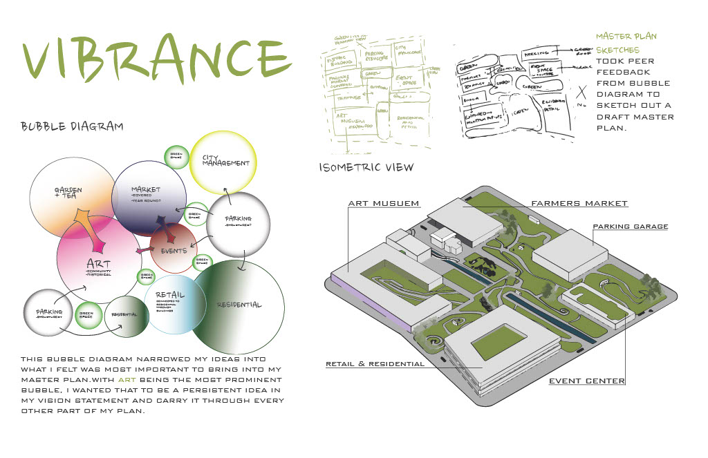
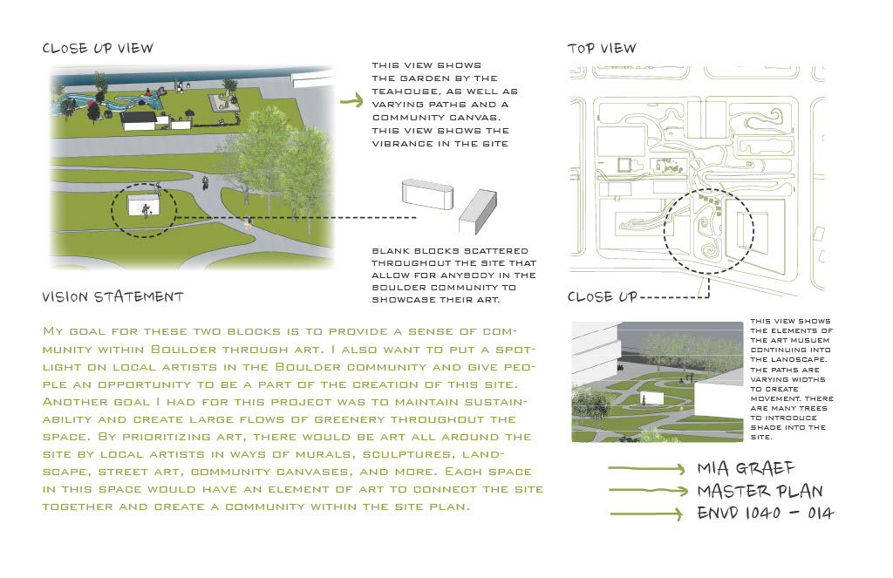
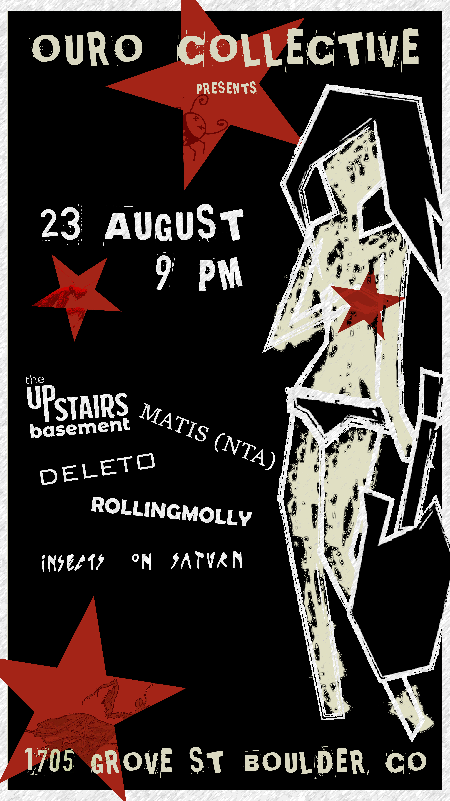
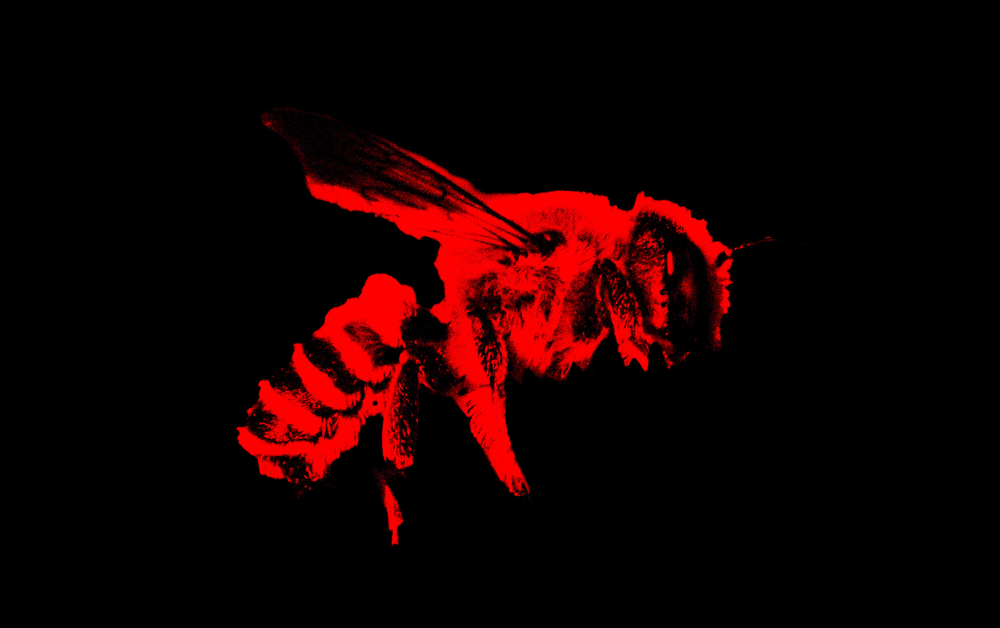
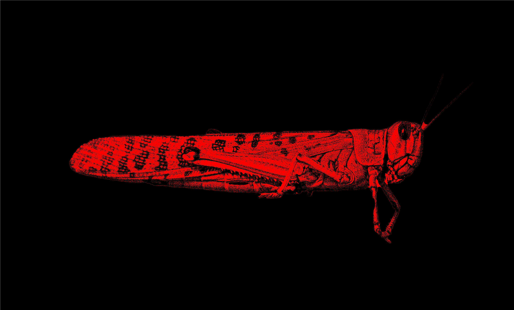
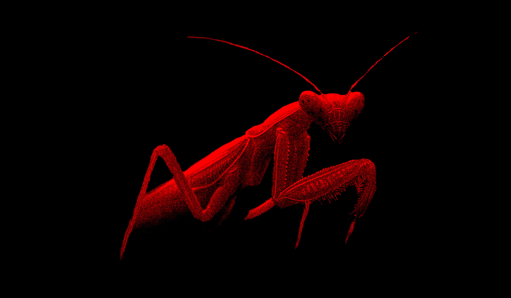
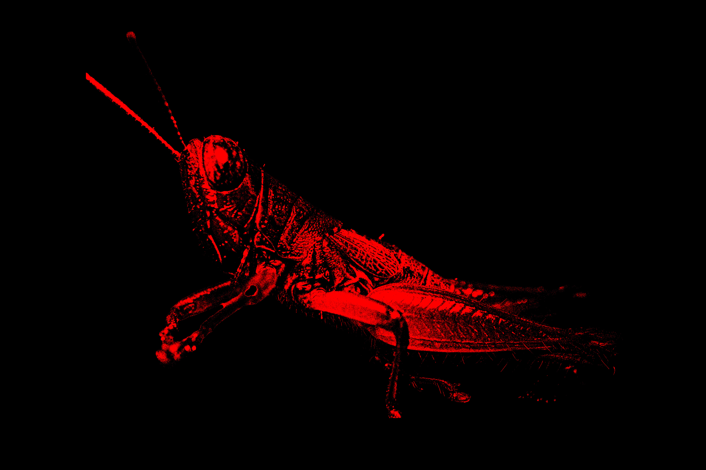

Bed Buddy
A friend that enhances your beside experience.


About the Bed Buddy
The Bed Buddy is a bedside lamp with a handful of features to enhance the bedtime experience and bring convenience to users as they wake up.The goal of the Bed Buddy is to eliminate the clutter and bring convenience to the users. Anybody can use a Bed Buddy to help change their lives!
Renders created in Adobe Photoshop and Illustrator for a Creative Thinking & Design Visualization course at ASU GIT.
Project Description
Working in a group, redesign an everyday product into something new and innovative.
Vibrance
An Urban Plan for two blocks in Boulder, Colorado.


Renders created in AutoCad for an Urban Planning course at CU Boulder Environmental Design.
Ouro Collective Show
Graphic Design poster for promoter 'Ouro Collective' advertising a music show in Boulder, Colorado.





Graphic created in Adobe Photoshop and Illustrator for promoter Ouro Collective.